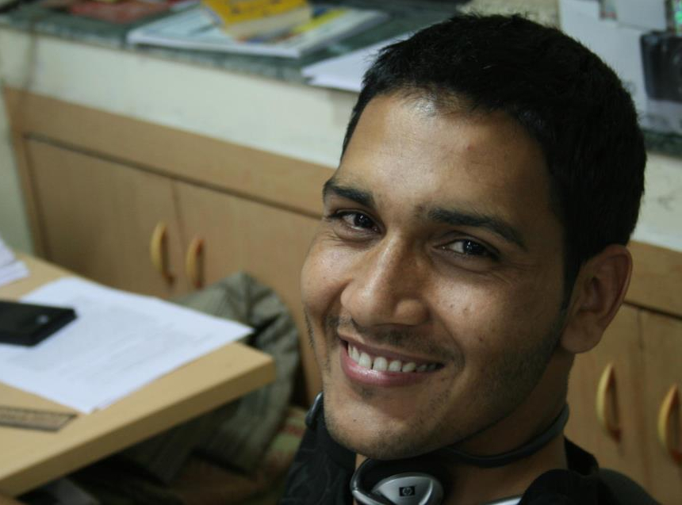

I am a first year PhD student in Artificial Intelligence and Vision Group at Oxford Brookes University. I am advised by Dr. Fabio Cuzzolin. My research is focused on spatio-temporal action detection and prediction in realistic videos.
Earlier, I was research engineer for two years in imaging and computer vision group at Siemens research India, directed by Amit Kale. In 2013, I graduated from masters in informatics (MOSIG) program at Institut National Polytechnique de Grenoble-INPG (School ENSIMAG) with specialization in Graphics Vision and Robotics (GVR). I completed my master's thesis under the supervision of Dr. Georgios Evangelidis and Dr. Radu HORAUD at INRIA, Grenoble. I received Bachelor of Technology degree in Electronics and Instrumentation Engineering from VIT University, Vellore, during which I had chance do an internship at university of Edinburgh under the supervision of Dr. Bob Fisher.
15/07/2016: Our paper on "Deep Learning for Detecting Multiple Space-Time Action Tubes in Videos" is accpted at BMVC, York, 2016
15/06/2016: Our team secures the 2nd place at ActivityNet Challenge 2016 in activity detection task [Results]. Our approach is described in arxiv technical report.

ActivityNet Large Scale Activity Recognition Challenge, 2016: Actvity detection, Rank: 2/6, Untrimmed Video Classification, Rank: 10/24.
ChaLearn Looking at People Challenge, 2014 , Gesture detection, Rank: 7/17.
ChaLearn Looking at People Challenge, 2013 , Gesture detection, Rank: 17/54.
I made an attempt to compile recent works on action recognition in more searchable format. Check it out on my older page
My old research page, it has link to my master thesis and bachelor thesis.
Citation Graph: part of submission from reading Group-1 at ICVSS 2016 (only works in firefox)